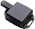
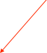
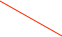
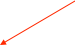

Motion Node Accelerometer



The Motion Node accelerometer is a three axis accelerometer that has a range of +/- 2g and a sensitivity of approximately 0.001g.Note that although this is a USB device, it requires a driver that internally treats the connection as an RS-232 serial port. This means that the icon doesn’t have to connected into a USB chain in the ORCA configuration window. The driver is in the ORCA Drivers folder. It is also available from the vendor at:
https://www.silabs.com/products/mcu/Pages/USBtoUARTBridgeVCPDrivers.aspx
The driver will be installed as /Library/Extensions/SiLabsUSBDriver.kext
If you are upgrading from the old driver, you should make sure the old driver is deleted, reboot, install the new driver, and then reboot again.

Start/Stop the data stream
Some device info that is of interest only to developers
Display either the vector sum of the x,y,z components or each component separately

A fifteen second running record of the data stream
Up to one hour of historical data
Serial port setup -- connect to the SLAB_USBtoUART port

Show the difference between the current value and the previous data value

Temperature is not calibrated at the time of this writing
Multiply the data by a factor of 1 to 500
Options to ship a five second subset of the data around an event.
Events are defined are excursions beyond the sensitivity setting.
Start running when a run starts. (It will continue running even when the run is stopped.)
Data Records
There is an option to ship a 5 second subset of the data stream (1 sec pretrigger, 4 sec post event) that is triggered by a xyz value that is greater than a specified sensitivity setting. The data record has the following format:
xxxx xxxx xxxx xxxx xxxx xxxx xxxx xxxx
^^^^ ^^^^ ^^^^ ^^-----------------------data id
^^ ^^^^ ^^^^ ^^^^ ^^^^-length in longs
xxxx xxxx xxxx xxxx xxxx xxxx xxxx xxxx
^^---------------------traceid (0=x,1=y,2=z)
^^^^ ^^^^ ^^^^-device
xxxx xxxx xxxx xxxx xxxx xxxx xxxx xxxx Unix Time
the trace follows and fills out the record length (raw unconverted data)